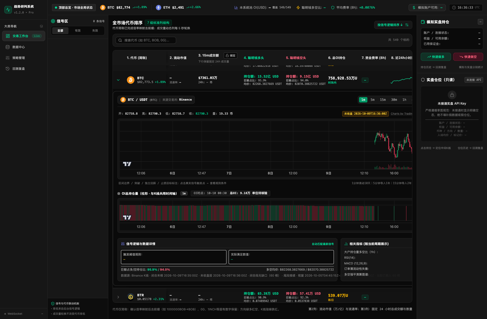
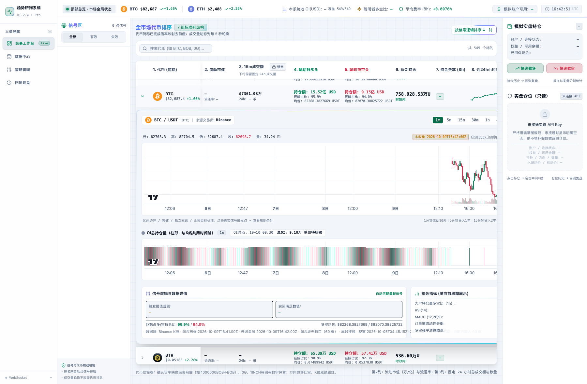
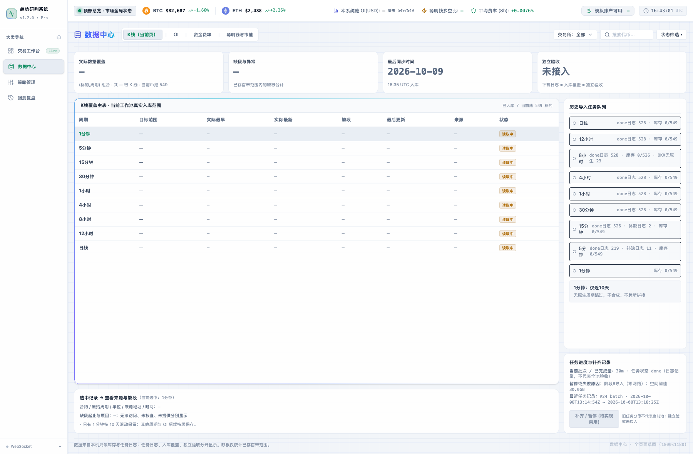
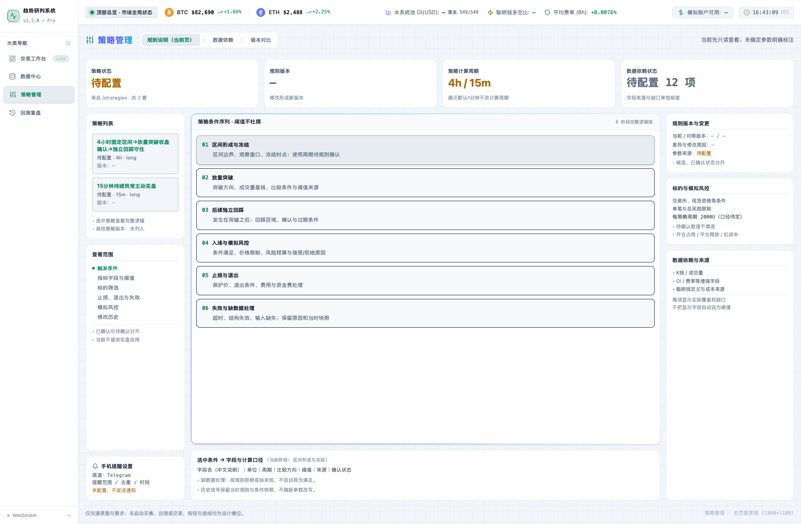
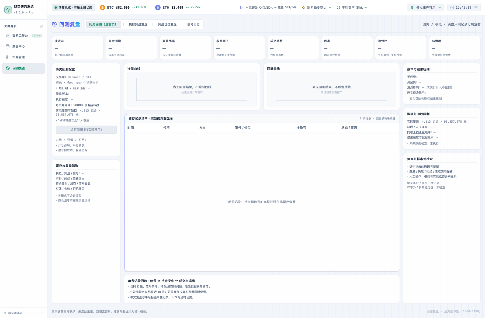
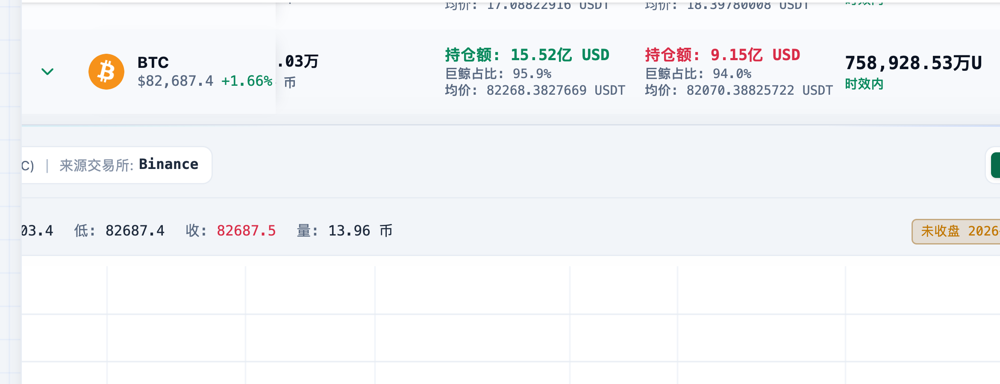
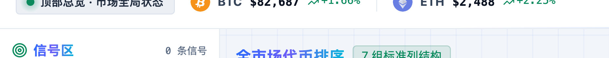

在不改动页面布局与任何内容的前提下，把整套深色界面翻转为浅色清爽风，并注入一组克制的 AI 动效。全部改动只落在「颜色令牌」与「已有元素的类名」上 —— 未新增、未删除任何 DOM 节点。
这是一次纯皮肤层改版。产品已有一套经草图验收的布局与信息架构，本次不动骨架，只解决三件事：
原界面的中性色阶本身就是一套完整的「画布 → 卡片 → 描边 → 三级文字」语义位。本次采用色阶整体反转：越深的色值现在越浅（页面底），越浅的色值现在越深（正文）。因为语义位没动，所以 bg-neutral-950 仍是「页面画布」、text-neutral-100 仍是「一级正文」，全站 40+ 处颜色工具类自动跟随，无需逐处改写。
涨跌 / 多空方向沿用产品既有口径（页脚与图表注释均写明「方向绿多红空、K线涨绿跌红」），本次只把明度调到浅底可读，未改动语义方向。
| 语义 | 令牌 | 色值 | 用途 |
|---|---|---|---|
| 涨 / 多 / 盈利 | emerald-400 | #0b8a5e | 涨幅、做多、未实现盈利、有效信号 |
| 跌 / 空 / 亏损 | rose-400 | #d92d48 | 跌幅、做空、未实现亏损、失效信号 |
| 陈旧 / 待确认 | amber-400 | #ad6800 | 数据陈旧、未锁定、待配置 |
| AI / 信号标记 | indigo-400 | #4f5bd5 | 信号触发标记、数据指标图标 |
| 层级 | 字号 / 字重 | 说明 |
|---|---|---|
| 页面主标题 | 20px / 700 | 数据中心、策略管理、回测复盘，配 AI 渐变 |
| 区块标题 | 14px / 700 | 信号区、全市场代币排序 |
| 正文 / 表体 | 12px / 400–500 | 表格数据、说明文字 |
| 辅助说明 | 10–11px / 400 | 脚注、口径说明 |
| 所有数值 | tabular-nums | 等宽数字，保证列与列纵向对齐不跳动 |
七种特效，全部为伪元素实现。设计克制原则：动效只出现在「状态」与「AI 参与」的位置，绝不覆盖在数据本身之上；周期统一在 2.6–6.5 秒，避免干扰盯盘。同时遵循 prefers-reduced-motion，系统开启减弱动效时全部自动停止。
悬停辉光 .ai-glow-hover 为第 7 种，仅在鼠标悬停时生效，静置无任何视觉变化。
| 特效 | 落点 |
|---|---|
| ai-aurora | 侧栏品牌徽标、按信号逻辑排序、选中信号卡、行内展开分析区、数据中心主表卡、策略条件序列卡、回测留存记录卡 |
| ai-pulse | 侧栏实时链路点、顶部总览状态点 |
| ai-shimmer | Live 徽章、7 组标准列结构徽章 |
| ai-gradient-text | 四个页面主标题、信号区、全市场代币排序 |
| ai-grid | 四个页面根画布 |
| ai-scanline | 顶部总览栏底缘、展开区两个面板标题下缘 |
| ai-glow-hover | 快速做多 / 快速做空按钮、信号卡 |

改前 · 深色主题

改后 · 浅色清爽风（布局、列宽、行高、文案与数据完全一致）



换色过程中暴露出一个原本就存在、但在深色下看不见的问题：市场表的冻结列（展开箭头 + 代币列）底色写的是 background-color: inherit，继承到的是行上的半透明色 bg-neutral-900/30。深色下 rgba(23,23,23,.3) 压在 #0d0d0d 上几乎无差别；换成浅色后变成 rgba(255,255,255,.3) 压在近白底上，横向滚动时下层单元格的深色文字会直接透出来，冻结列与滚动内容糊在一起。

修复后：横向滚动 420px，冻结列底色实心，文字不串行

渐变标题、扫光徽章、呼吸状态点的实际渲染
修法：把三种行状态（默认 / 悬停 / 展开）在行级换成等价实色，冻结 td 继续 inherit 即可自动拿到实色。不新增节点、不改结构，三种状态的视觉层次与原版一一对应。
| 文件 | 改动性质 |
|---|---|
| src/index.css | 新增设计令牌层（中性色阶反转、语义色、AI 调色板）+ 7 个 AI 特效类 + 滚动条/弹窗/冻结列实色修正 |
| src/components/LightweightChart.tsx | 图表 COLOR 常量由深色主题换为浅色主题（背景、网格、坐标轴、十字光标、蜡烛、成交量、OI 线）；语义方向未变 |
| src/components/TokenTable.tsx | 迷你图描边色随语义色更新；根画布 / 标题 / 徽章 / 排序胶囊挂 AI 类名 |
| src/components/NavigationSidebar.tsx | 品牌徽标挂极光描边；Live 徽章挂扫光；实时链路点挂呼吸光晕 |
| src/components/TopStatusBar.tsx | 顶栏挂扫描线；状态点挂呼吸光晕 |
| src/components/SignalListPanel.tsx | 标题挂渐变文字；信号卡挂悬停辉光；选中态挂极光描边 |
| src/components/InlineExpandedChart.tsx | 分析区根容器挂极光描边；两个面板标题挂扫描线 |
| src/components/PositionPanel.tsx | 快速做多 / 做空按钮挂悬停辉光 |
| src/components/{DataCenter,StrategyManagement,BacktestReview}View.tsx | 根画布挂数据流网格；主标题挂渐变文字；主卡片挂极光描边；回测页空态坐标轴由 #333 改为浅灰 |
未改动：App.tsx、全部数据层与 API、全部业务逻辑、全部文案、全部布局类名、代币品牌 logo 配色。
「不改布局与内容」不是自述，而是可复算的机器判据。方法：在同一 JS 任务内把所有 ai-* 类名从运行中的 DOM 上摘掉（不触发 React 重渲染），前后各记录一次指标并逐项比对。
| 页面 | 元素总数 | 节点数不变 | 文本不变 | 标签直方图不变 | 关键容器几何不变 |
|---|---|---|---|---|---|
| 交易工作台 | 2027 | PASS | PASS | PASS | PASS |
| 数据中心 | 377 | PASS | PASS | PASS | PASS |
| 策略管理 | 298 | PASS | PASS | PASS | PASS |
| 回测复盘 | 310 | PASS | PASS | PASS | PASS |
几何比对覆盖 10 个关键容器：侧栏、顶栏、信号区、行情区、持仓区、表格滚动容器、主表、表头、首个数据行、冻结列单元格 —— 改前改后逐项相等（含 x / y / width / height）。
加密货币趋势判断系统 · UI 改版设计规范 · 浅色清爽风 · 全部截图摄于 1800×1180 视口